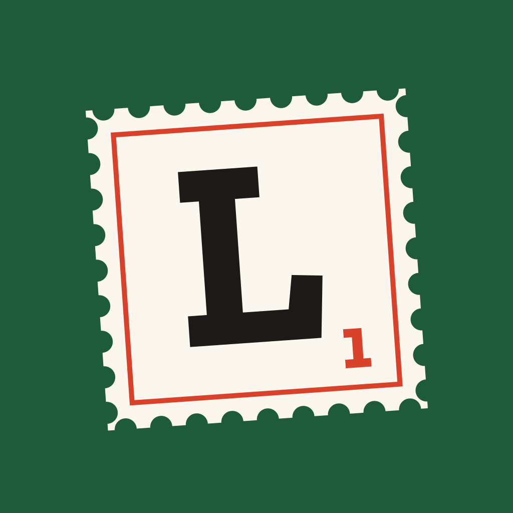

LetterfallSupport
Letterfall is a calm word game for iPhone. Drop one letter, rearrange the rest into a new word, and keep going down to three letters.
Contact
Questions, bug reports or a word you think is missing? Email narek@zoel.io. Please include your iPhone model, iOS version and the game language you play in.
How do I play?
Each stamp starts with a long word. Tap a letter to drop it, then arrange the remaining tiles into a real word. Repeat until three letters are left. Matching the best route earns three stars.
What is the Daily Post?
A new puzzle every day. Everyone playing in the same language gets the same word, and it resets at midnight on your device.
How do I change the language?
Open the Me tab and tap Language. The game and its words switch together.
I bought something. How do I restore it?
Open the Shop tab and tap Restore purchases. Coins are consumable and can't be restored; the daily archive can.
How do I get a refund?
Refunds are handled by Apple. Visit reportaproblem.apple.com.